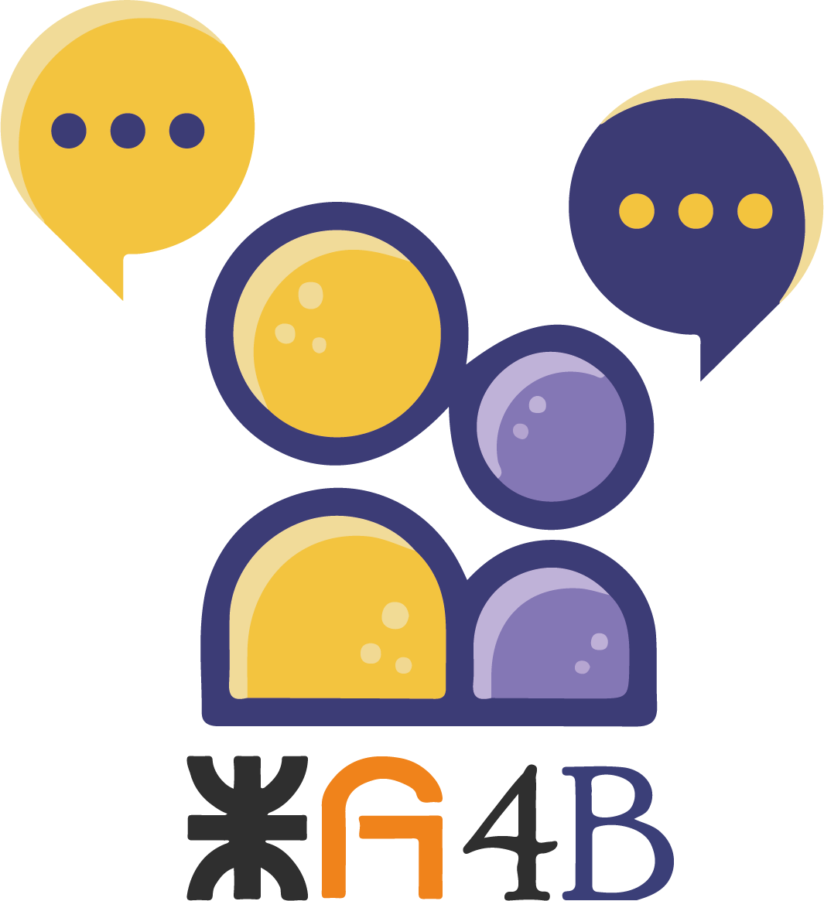

<ion-content [fullscreen]="true"> 
      <button style="width: 100%; padding: 12px; display: flex; justify-content: start; font-size: larger; align-items: center;
      border-radius: 5px; background-color: transparent; margin-top: 1rem; font-weight: bold; font-family: Georgia, 'Times New Roman', Times, serif;
      color: rgb(255, 255, 255);"  routerLink="/login"><svg style="margin-right: 10px;color: rgb(255, 255, 255);" xmlns="http://www.w3.org/2000/svg" width="24" height="24" fill="currentColor" class="bi bi-arrow-left-circle" viewBox="0 0 16 16">
      <path fill-rule="evenodd" d="M1 8a7 7 0 1 0 14 0A7 7 0 0 0 1 8zm15 0A8 8 0 1 1 0 8a8 8 0 0 1 16 0zm-4.5-.5a.5.5 0 0 1 0 1H5.707l2.147 2.146a.5.5 0 0 1-.708.708l-3-3a.5.5 0 0 1 0-.708l3-3a.5.5 0 1 1 .708.708L5.707 7.5H11.5z"/>
      </svg>Salir</button>
    
    <div style="display: grid; justify-content: center;align-items: center; width: 100%; height: 80%;">
      <ion-chip style="height: 80%; background-color: #c2495b;">
        
      </ion-chip>
      <ion-chip style="height: 80%; background-color: #ad954c;">
        
      </ion-chip>
    </div>
  
</ion-content>
